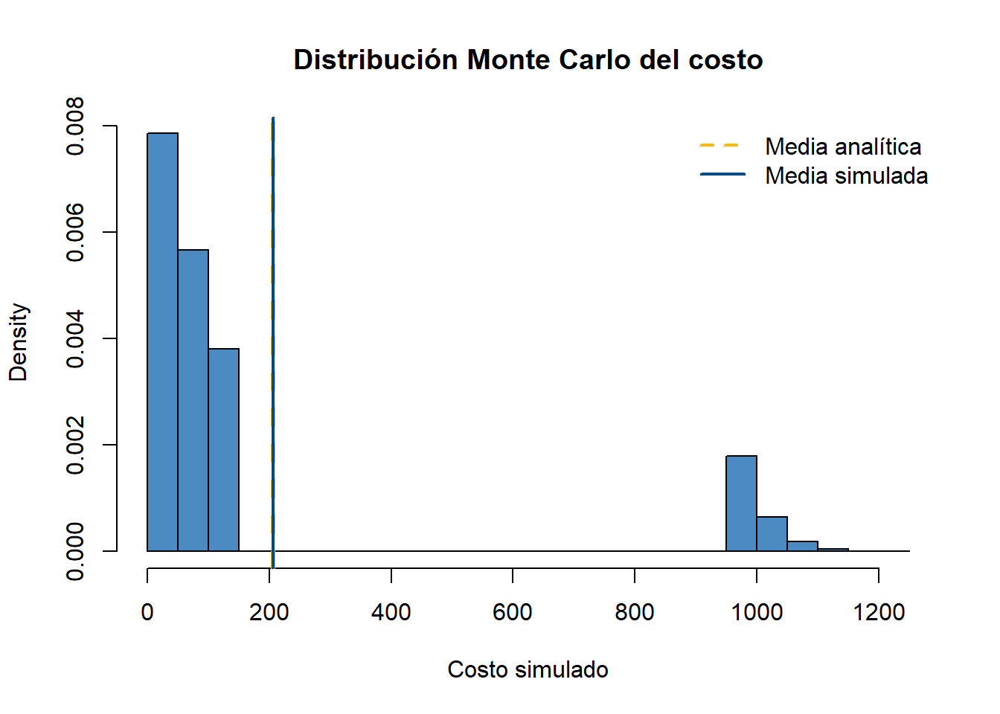
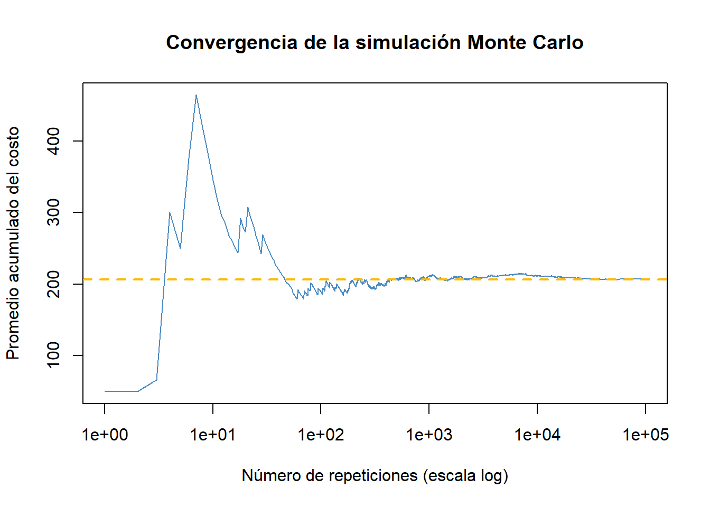

Code
# Ejemplo genérico: X ~ Bin(20, 0.1), costo = 50X + 800*1{X>3}
n <- 20; p <- 0.1
EX <- n*p
P_umbral <- 1 - pbinom(3, n, p)
E_costo <- 50*EX + 800*P_umbral
E_costo[1] 206.3627Hasta ahora, cada tema del sitio te decía en el título qué distribución ibas a usar. Los exámenes reales no funcionan así: te dan un contexto (una auditoría, un centro de datos, un fondo de inversión) y tú tienes que reconocer qué modelo aplica, sin que nadie te lo diga. Esta página enseña ese paso — el que normalmente nadie enseña explícitamente — con ejemplos resueltos completos.
Cuando un problema no nombra la distribución, hazte estas preguntas en este orden:
Si el problema dice algo como “se seleccionan/inspeccionan/auditan \(n\) elementos” —un número concreto y fijo de antemano— y cada uno resulta en éxito/fracaso, estás ante una posible binomial. Verifica además: ¿la probabilidad de éxito es la misma para todos? ¿son independientes entre sí?
Frases típicas: “una muestra de \(n\)…”, “de los \(n\) pedidos…”, “se auditan \(n\) solicitudes”.
Si en cambio el problema da una tasa (eventos por hora, por día, por lote) y pregunta por el número de eventos en un intervalo, sin que exista un “número de intentos” que contar, es una señal de Poisson.
Frases típicas: “en promedio ocurren \(\lambda\) eventos por…”, “se registran alertas/llamadas/fallos a una tasa de…”.
Si identificaste una binomial en la Pregunta 1 pero \(n\) es grande (cientos o miles) y calcular la fórmula exacta sería muy pesado, calcula \(np\) y \(n(1-p)\):
Si el enunciado da una función y la llama (o la simboliza como) \(M_X(t)\), es una FGM — deriva para momentos, o reconoce la forma algebraica para identificar la familia (Tema P6d tiene la tabla de formas conocidas).
Un enunciado puede sonar a Poisson (porque menciona “tasa”) pero en realidad ser binomial si, mirando con cuidado, sí hay un número fijo de ensayos con dos resultados posibles. Lee el contexto completo, no solo la primera frase.
Muchos problemas reales no piden \(E[X]\) directamente, sino el valor esperado de una función de \(X\) — por ejemplo, un costo que incluye una penalización fija si \(X\) supera cierto umbral.
La regla de oro: \(E[g(X)] \ne g(E[X])\) en general. Si \(g\) no es lineal (tiene un término cuadrático, o un umbral tipo “si \(X>c\)”), no puedes simplemente evaluar \(g\) en \(E[X]\).
Caso 1 — término cuadrático. Si el costo es \(C=aX+bX^2\): \[E[C] = a\,E[X] + b\,E[X^2] = a\,E[X] + b\left(\text{Var}(X)+[E(X)]^2\right)\] Siempre necesitas \(E[X^2]\), que se obtiene de \(\text{Var}(X)+[E(X)]^2\) — nunca de \([E(X)]^2\) solo.
Caso 2 — penalización por umbral. Si el costo es \(C=aX + K\cdot\mathbb{1}\{X>c\}\) (una penalización fija \(K\) que se activa solo si \(X\) supera \(c\)): \[E[C] = a\,E[X] + K\cdot P(X>c)\] Aquí necesitas la probabilidad de superar el umbral, no solo la media.
[1] 206.3627Toda respuesta analítica debería venir acompañada de una verificación por simulación. Esta sección desglosa cada paso del patrón general, y —lo que normalmente no se explica— cómo leer e interpretar lo que la simulación te devuelve, no solo cómo generarla.
X_sim es un vector de 100,000 números, cada uno una posible realización de \(X\sim\text{Bin}(20,0.1)\) — no un solo valor. Antes de seguir, vale la pena mirar qué generaste:
[1] 1 1 2 4 1 4 4 2 2 0X_sim
0 1 2 3 4 5 6 7 8 9
0.12381 0.26899 0.28336 0.19022 0.08990 0.03212 0.00934 0.00198 0.00027 0.00001 La tabla de frecuencias relativas de X_sim debería parecerse mucho a dbinom(0:8, 20, 0.1) — si no se parece, el problema está en este primer paso, antes incluso de llegar al costo.
(X_sim > 3) produce un vector de TRUE/FALSE, que R trata como 1/0 al multiplicar — por eso 800*(X_sim > 3) suma 800 exactamente en las posiciones donde X_sim superó 3, y 0 en las demás. Este es el paso donde más se cometen errores (ver la tabla de la Sección 4): la función de costo simulada debe ser algebraicamente idéntica a la que usaste en el cálculo analítico.
[1] 206.832[1] 1.022958mean(costo_sim) da tu estimación puntual. Pero como es un promedio de una muestra simulada, también tiene su propio error estándar —el “error de Monte Carlo”— que decrece con \(1/\sqrt{n_{\text{sim}}}\). Con eso puedes construir un intervalo de confianza para tu propia simulación, exactamente como en el Tema I3:
La forma más simple: poner el valor analítico y el simulado lado a lado, con su diferencia relativa.
metodo valor diferencia_relativa
1 Analítico 206.3627 NA
2 Monte Carlo 206.8320 0.002274352Si el intervalo de confianza del Paso 3 contiene al valor analítico, tienes una verificación estadísticamente honesta —no solo “se parecen a ojo”— de que ambos métodos coinciden.
Ver la forma completa de la distribución del costo, no solo su promedio, ayuda a entender por qué el valor esperado es el que es:
hist(costo_sim, breaks = 30, col = "#4B8BC2", probability = TRUE,
main = "Distribución Monte Carlo del costo",
xlab = "Costo simulado")
abline(v = E_costo_analitico, col = "#FFB903", lwd = 3, lty = 2)
abline(v = media_sim, col = "#004B85", lwd = 2)
legend("topright", legend = c("Media analítica", "Media simulada"),
col = c("#FFB903", "#004B85"), lwd = 2, lty = c(2,1), bty = "n")
El histograma tiene dos “grupos” claramente separados: uno alrededor de valores bajos (cuando \(X\le3\), sin penalización) y otro desplazado más a la derecha (cuando \(X>3\), con la penalización de 800 sumada). El valor esperado (las líneas verticales) cae en algún punto intermedio — no es “el valor más probable”, es el promedio ponderado de ambos grupos.
Una pregunta razonable es: ¿por qué \(10^5\) repeticiones y no 100, o un millón? Este gráfico lo responde visualmente:
promedio_acumulado <- cumsum(costo_sim) / seq_along(costo_sim)
plot(1:n_sim, promedio_acumulado, type = "l", col = "#4B8BC2", log = "x",
xlab = "Número de repeticiones (escala log)", ylab = "Promedio acumulado del costo",
main = "Convergencia de la simulación Monte Carlo")
abline(h = E_costo_analitico, col = "#FFB903", lwd = 2, lty = 2)
Con pocas repeticiones (los primeros cientos) el promedio acumulado “salta” bastante — todavía no hay suficiente información. A partir de unos pocos miles ya se estabiliza cerca del valor teórico, y el resto de las repeticiones solo lo afinan más. Por eso \(10^5\) es un estándar razonable: mucho más que suficiente para estabilizar, sin ser computacionalmente pesado. Ver más trucos →
No existe un umbral universal, pero una guía práctica: si tu valor analítico cae dentro del intervalo de confianza de la simulación (Paso 3), la coincidencia es estadísticamente sólida. Si la diferencia relativa es menor al 1-2% con \(10^5\) repeticiones, es una señal fuerte de que el cálculo analítico es correcto. Si la diferencia es mucho mayor, el error casi siempre está en que la función de costo simulada no coincide exactamente con la analítica (revisa la Sección 4) — rara vez es “mala suerte” de la simulación con \(10^5\) repeticiones.
Estos son los errores conceptuales (no de sintaxis — el código siempre “corre”) que ya han aparecido en este curso:
| Error | Síntoma | Dónde se explicó |
|---|---|---|
| Omitir la corrección de continuidad | La probabilidad aproximada se aleja del valor exacto de forma sistemática | Tema P6c |
| Confundir \(\sigma_{\text{Poisson}}=\sqrt\lambda\) con \(\sigma_{\text{Binomial}}=\sqrt{np(1-p)}\) | Falta el factor \((1-p)\) en la raíz | Guía de examen 2 |
| No reescalar \(\lambda\) al intervalo de la pregunta | La probabilidad calculada es de un intervalo distinto al pedido | Tema P6b |
| Usar \(z\) en vez de \(t\) (o viceversa) | Valor P o IC ligeramente distinto — puede cambiar la conclusión en casos límite | Tema I2 |
| Grados de libertad incorrectos (\(n\) en vez de \(n-1\)) | Diferencia pequeña pero real en el valor crítico o el valor P | Tema I3 |
| Confundir \(E[X^2]\) con \((E[X])^2\) | Costo esperado mal calculado en funciones cuadráticas | Sección 2 de esta página |
| Confundir “más de \(k\)” con “al menos \(k\)” | La respuesta difiere exactamente en \(P(X=k)\) | Guía de examen 2 |
Contexto: un fabricante de semiconductores clasifica cada oblea producida como apta o no apta. Históricamente, el 91% resultan aptas, de forma independiente entre obleas. Se examina un lote de control de 30 obleas.
Paso 1 — Identificar el modelo. Hay un número fijo de obleas (\(n=30\)), cada una con dos resultados posibles, independientes, con probabilidad constante. Sea \(X\) = número de obleas no aptas: \(X\sim\text{Bin}(30,\,0.09)\).
Paso 2 — La pregunta de costo. Cada oblea no apta cuesta $200 en desperdicio; si más de 4 obleas no son aptas, se detiene la línea con un costo fijo adicional de $3{,}000.
EX P_mayor_4 E_costo
2.7000000 0.1276941 923.0823516 set.seed(1)
X_sim <- rbinom(100000, n, p)
costo_sim <- 200*X_sim + 3000*(X_sim > 4)
media_sim <- mean(costo_sim)
ee_mc <- sd(costo_sim) / sqrt(100000)
data.frame(
metodo = c("Analítico", "Monte Carlo"),
valor = c(E_costo, media_sim),
IC_inferior = c(NA, media_sim - 1.96*ee_mc),
IC_superior = c(NA, media_sim + 1.96*ee_mc)
) metodo valor IC_inferior IC_superior
1 Analítico 923.0824 NA NA
2 Monte Carlo 923.9680 916.2744 931.6616Resultado: \(E[\text{Costo}]\approx\$923\) por lote. La simulación da \(\approx\$926\), con un intervalo de confianza del 95% de \((\$918,\ \$933)\) — el valor analítico cae dentro de ese intervalo, la misma verificación aplicada paso a paso en la Sección 3.
Contexto: una app de streaming registra fallos de reproducción reportados por hora, asumiendo ocurrencia aleatoria e independiente a tasa constante, calibrada en 2.5 fallos/hora.
Paso 1 — Identificar el modelo. No hay un “número de intentos” que contar — hay una tasa de eventos en el tiempo: Poisson.
Paso 2 — Evaluar el supuesto con datos de control. En una muestra de 60 horas reales, la media fue 2.6 fallos/hora y la varianza 2.7.
Resultado: la razón varianza/media es \(1.04\) — muy cercana a 1, consistente con el supuesto de Poisson (a diferencia del caso de sobredispersión visto en el examen, aquí el modelo original sí parece razonable).
Contexto: dos sistemas de monitoreo, independientes entre sí, generan alertas cuyas funciones generadoras de momentos son \(M_X(t)=e^{2.5(e^t-1)}\) y \(M_Y(t)=e^{3.5(e^t-1)}\).
Paso 1 — Reconocer la forma. Ambas tienen la forma \(e^{\lambda(e^t-1)}\): son Poisson, con \(\lambda_X=2.5\) y \(\lambda_Y=3.5\).
Paso 2 — Distribución de la suma. Por la propiedad de las FGM de sumas de independientes: \[M_{X+Y}(t) = M_X(t)M_Y(t) = e^{(2.5+3.5)(e^t-1)} = e^{6(e^t-1)} \;\Rightarrow\; X+Y\sim\text{Poisson}(6)\]
Resultado: \(P(X+Y=7)\approx0.1377\).
Caso D. Un banco revisa 40 solicitudes de crédito de un lote, clasificando cada una como aprobada o rechazada. Históricamente el 22% se rechaza, de forma independiente. Si cada rechazo cuesta $15{,}000 en reprocesamiento, y más de 12 rechazos activan una revisión de proceso completa con costo adicional de $100{,}000, calcule el costo esperado total (analítico + Monte Carlo).
Caso E. Un sistema de sensores IoT reporta lecturas anómalas a una tasa de 1.8 por día. Calcule la probabilidad de más de 10 anomalías en una semana, verificando si la aproximación normal o la de Poisson sería más apropiada si en cambio se supiera que estas anomalías provienen de revisar 500 sensores, cada uno con probabilidad 0.0036 de fallar por día, de forma independiente.
Caso F. \(M_X(t)=(0.4e^t+0.6)^{15}\) y \(M_Y(t)=(0.4e^t+0.6)^{10}\), independientes. Identifique ambas distribuciones, encuentre la distribución de \(X+Y\), y calcule \(E[5(X+Y)+(X+Y)^2]\) analíticamente y por simulación.
---
title: "Cómo resolver casos disfrazados · Guía avanzada para el Taller 2"
---
::: {.hero-motivacion}
## 🕵️ Cuando el examen no te dice qué fórmula usar
Hasta ahora, cada tema del sitio te decía en el título qué distribución ibas a usar. Los exámenes reales no funcionan así: te dan un contexto (una auditoría, un centro de datos, un fondo de inversión) y **tú** tienes que reconocer qué modelo aplica, sin que nadie te lo diga. Esta página enseña ese paso — el que normalmente nadie enseña explícitamente — con ejemplos resueltos completos.
:::
::: {.callout-note}
## Qué vas a encontrar aquí
1. Un marco de decisión para identificar el modelo correcto a partir del contexto.
2. Cómo calcular valores esperados de **funciones de costo no lineales** (el tipo de pregunta que combina varios temas a la vez).
3. El patrón de **verificación por simulación Monte Carlo** que se espera en cualquier respuesta completa.
4. Una lista de los errores de código más comunes — los mismos que ya se han visto (y corregido) a lo largo de este curso.
5. Tres casos completamente resueltos, y tres más para que practiques por tu cuenta.
:::
---
## 1. Cómo identificar el modelo sin que te lo digan
Cuando un problema no nombra la distribución, hazte estas preguntas **en este orden**:
::: {.panel-tabset}
## Pregunta 1: ¿hay un número fijo de "intentos"?
Si el problema dice algo como "se seleccionan/inspeccionan/auditan $n$ elementos" —un número concreto y fijo de antemano— y cada uno resulta en éxito/fracaso, estás ante una posible **binomial**. Verifica además: ¿la probabilidad de éxito es la misma para todos? ¿son independientes entre sí?
**Frases típicas:** "una muestra de $n$...", "de los $n$ pedidos...", "se auditan $n$ solicitudes".
## Pregunta 2: ¿hay una tasa, sin un número fijo de intentos?
Si en cambio el problema da una **tasa** (eventos por hora, por día, por lote) y pregunta por el número de eventos en un intervalo, sin que exista un "número de intentos" que contar, es una señal de **Poisson**.
**Frases típicas:** "en promedio ocurren $\lambda$ eventos por...", "se registran alertas/llamadas/fallos a una tasa de...".
## Pregunta 3: ¿es una binomial, pero con $n$ grande?
Si identificaste una binomial en la Pregunta 1 pero $n$ es grande (cientos o miles) y calcular la fórmula exacta sería muy pesado, calcula $np$ y $n(1-p)$:
- Si ambos son $\ge5$ (o $\ge10$, según el criterio que te indiquen): usa la **aproximación normal**, con corrección de continuidad.
- Si $np<5$ (típicamente porque $p$ es muy chico): usa la **aproximación Poisson** con $\lambda=np$. La normal fallaría aquí — ya viste por qué en el Tema P6c.
## Pregunta 4: ¿dan una función $M(t)$ directamente?
Si el enunciado da una función y la llama (o la simboliza como) $M_X(t)$, es una **FGM** — deriva para momentos, o reconoce la forma algebraica para identificar la familia (Tema P6d tiene la tabla de formas conocidas).
:::
::: {.callout-important}
## La trampa más común
Un enunciado puede *sonar* a Poisson (porque menciona "tasa") pero en realidad ser binomial si, mirando con cuidado, sí hay un número fijo de ensayos con dos resultados posibles. Lee el contexto completo, no solo la primera frase.
:::
---
## 2. Funciones de costo no lineales: $E[aX+bX^2]$ y umbrales
Muchos problemas reales no piden $E[X]$ directamente, sino el valor esperado de una **función** de $X$ — por ejemplo, un costo que incluye una penalización fija si $X$ supera cierto umbral.
**La regla de oro:** $E[g(X)] \ne g(E[X])$ en general. Si $g$ no es lineal (tiene un término cuadrático, o un umbral tipo "si $X>c$"), **no puedes** simplemente evaluar $g$ en $E[X]$.
**Caso 1 — término cuadrático.** Si el costo es $C=aX+bX^2$:
$$E[C] = a\,E[X] + b\,E[X^2] = a\,E[X] + b\left(\text{Var}(X)+[E(X)]^2\right)$$
Siempre necesitas $E[X^2]$, que se obtiene de $\text{Var}(X)+[E(X)]^2$ — nunca de $[E(X)]^2$ solo.
**Caso 2 — penalización por umbral.** Si el costo es $C=aX + K\cdot\mathbb{1}\{X>c\}$ (una penalización fija $K$ que se activa solo si $X$ supera $c$):
$$E[C] = a\,E[X] + K\cdot P(X>c)$$
Aquí necesitas la **probabilidad** de superar el umbral, no solo la media.
```{r}
# Ejemplo genérico: X ~ Bin(20, 0.1), costo = 50X + 800*1{X>3}
n <- 20; p <- 0.1
EX <- n*p
P_umbral <- 1 - pbinom(3, n, p)
E_costo <- 50*EX + 800*P_umbral
E_costo
```
---
## 3. El patrón de verificación Monte Carlo, paso a paso
Toda respuesta analítica debería venir acompañada de una verificación por simulación. Esta sección desglosa **cada paso** del patrón general, y —lo que normalmente no se explica— **cómo leer e interpretar** lo que la simulación te devuelve, no solo cómo generarla.
### Paso 1 — Simular la variable base
```{r}
n <- 20; p <- 0.1
set.seed(1)
n_sim <- 100000
X_sim <- rbinom(n_sim, n, p)
```
`X_sim` es un **vector de 100,000 números**, cada uno una posible realización de $X\sim\text{Bin}(20,0.1)$ — no un solo valor. Antes de seguir, vale la pena *mirar* qué generaste:
```{r}
head(X_sim, 10) # los primeros 10 valores simulados
table(X_sim) / n_sim # la distribución empírica de X_sim
```
::: {.ficha-resultado}
La tabla de frecuencias relativas de `X_sim` debería parecerse mucho a `dbinom(0:8, 20, 0.1)` — si no se parece, el problema está en este primer paso, antes incluso de llegar al costo.
:::
### Paso 2 — Aplicar la MISMA función de costo, vectorizada
```{r}
costo_sim <- 50*X_sim + 800*(X_sim > 3)
```
`(X_sim > 3)` produce un vector de `TRUE`/`FALSE`, que R trata como `1`/`0` al multiplicar — por eso `800*(X_sim > 3)` suma 800 exactamente en las posiciones donde `X_sim` superó 3, y 0 en las demás. Este es el paso donde más se cometen errores (ver la tabla de la Sección 4): la función de costo simulada debe ser **algebraicamente idéntica** a la que usaste en el cálculo analítico.
### Paso 3 — Resumir, y cuantificar qué tan confiable es el resumen
```{r}
media_sim <- mean(costo_sim)
ee_montecarlo <- sd(costo_sim) / sqrt(n_sim)
media_sim
ee_montecarlo
```
`mean(costo_sim)` da tu estimación puntual. Pero como es un promedio de una muestra simulada, **también tiene su propio error estándar** —el "error de Monte Carlo"— que decrece con $1/\sqrt{n_{\text{sim}}}$. Con eso puedes construir un intervalo de confianza para tu propia simulación, exactamente como en el Tema I3:
```{r}
c(inferior = media_sim - 1.96*ee_montecarlo, superior = media_sim + 1.96*ee_montecarlo)
```
## Cómo "ver" los resultados: tres formas de verificar que todo cuadra
### Forma 1 — Tabla comparativa numérica
La forma más simple: poner el valor analítico y el simulado lado a lado, con su diferencia relativa.
```{r}
EX <- n*p
P_umbral <- 1 - pbinom(3, n, p)
E_costo_analitico <- 50*EX + 800*P_umbral
data.frame(
metodo = c("Analítico", "Monte Carlo"),
valor = c(E_costo_analitico, media_sim),
diferencia_relativa = c(NA, abs(media_sim - E_costo_analitico)/E_costo_analitico)
)
```
Si el intervalo de confianza del Paso 3 **contiene** al valor analítico, tienes una verificación estadísticamente honesta —no solo "se parecen a ojo"— de que ambos métodos coinciden.
### Forma 2 — Histograma de la variable simulada
Ver la *forma completa* de la distribución del costo, no solo su promedio, ayuda a entender por qué el valor esperado es el que es:
```{r}
#| label: fig-histograma-costo-mc
#| fig-cap: "Distribución simulada del costo, con la media analítica y la simulada superpuestas"
hist(costo_sim, breaks = 30, col = "#4B8BC2", probability = TRUE,
main = "Distribución Monte Carlo del costo",
xlab = "Costo simulado")
abline(v = E_costo_analitico, col = "#FFB903", lwd = 3, lty = 2)
abline(v = media_sim, col = "#004B85", lwd = 2)
legend("topright", legend = c("Media analítica", "Media simulada"),
col = c("#FFB903", "#004B85"), lwd = 2, lty = c(2,1), bty = "n")
```
::: {.ficha-resultado}
El histograma tiene dos "grupos" claramente separados: uno alrededor de valores bajos (cuando $X\le3$, sin penalización) y otro desplazado más a la derecha (cuando $X>3$, con la penalización de 800 sumada). El valor esperado (las líneas verticales) cae en algún punto intermedio — no es "el valor más probable", es el promedio ponderado de ambos grupos.
:::
### Forma 3 — Gráfico de convergencia
Una pregunta razonable es: ¿por qué $10^5$ repeticiones y no 100, o un millón? Este gráfico lo responde visualmente:
```{r}
#| label: fig-convergencia-mc
#| fig-cap: "El promedio simulado se estabiliza a medida que crecen las repeticiones"
promedio_acumulado <- cumsum(costo_sim) / seq_along(costo_sim)
plot(1:n_sim, promedio_acumulado, type = "l", col = "#4B8BC2", log = "x",
xlab = "Número de repeticiones (escala log)", ylab = "Promedio acumulado del costo",
main = "Convergencia de la simulación Monte Carlo")
abline(h = E_costo_analitico, col = "#FFB903", lwd = 2, lty = 2)
```
::: {.callout-tip}
## 💡 Truco de interpretación
Con pocas repeticiones (los primeros cientos) el promedio acumulado "salta" bastante — todavía no hay suficiente información. A partir de unos pocos miles ya se estabiliza cerca del valor teórico, y el resto de las repeticiones solo lo afinan más. Por eso $10^5$ es un estándar razonable: mucho más que suficiente para estabilizar, sin ser computacionalmente pesado. [Ver más trucos →](../recursos.qmd)
:::
::: {.callout-important}
## Qué tan cerca es "suficientemente cerca"
No existe un umbral universal, pero una guía práctica: si tu valor analítico cae **dentro** del intervalo de confianza de la simulación (Paso 3), la coincidencia es estadísticamente sólida. Si la diferencia relativa es menor al 1-2% con $10^5$ repeticiones, es una señal fuerte de que el cálculo analítico es correcto. Si la diferencia es mucho mayor, el error casi siempre está en que la función de costo simulada no coincide exactamente con la analítica (revisa la Sección 4) — rara vez es "mala suerte" de la simulación con $10^5$ repeticiones.
:::
---
## 4. Lista de errores de código que debes poder detectar
Estos son los errores conceptuales (no de sintaxis — el código siempre "corre") que ya han aparecido en este curso:
| Error | Síntoma | Dónde se explicó |
|---|---|---|
| Omitir la corrección de continuidad | La probabilidad aproximada se aleja del valor exacto de forma sistemática | [Tema P6c](tema-p6c-estudiante.qmd) |
| Confundir $\sigma_{\text{Poisson}}=\sqrt\lambda$ con $\sigma_{\text{Binomial}}=\sqrt{np(1-p)}$ | Falta el factor $(1-p)$ en la raíz | Guía de examen 2 |
| No reescalar $\lambda$ al intervalo de la pregunta | La probabilidad calculada es de un intervalo distinto al pedido | [Tema P6b](tema-p6b-estudiante.qmd) |
| Usar $z$ en vez de $t$ (o viceversa) | Valor P o IC ligeramente distinto — puede cambiar la conclusión en casos límite | [Tema I2](tema-i2-estudiante.qmd) |
| Grados de libertad incorrectos ($n$ en vez de $n-1$) | Diferencia pequeña pero real en el valor crítico o el valor P | [Tema I3](tema-i3-estudiante.qmd) |
| Confundir $E[X^2]$ con $(E[X])^2$ | Costo esperado mal calculado en funciones cuadráticas | Sección 2 de esta página |
| Confundir "más de $k$" con "al menos $k$" | La respuesta difiere exactamente en $P(X=k)$ | Guía de examen 2 |
---
## 5. Tres casos resueltos
### Caso A — Control de calidad de semiconductores
**Contexto:** un fabricante de semiconductores clasifica cada oblea producida como apta o no apta. Históricamente, el 91\% resultan aptas, de forma independiente entre obleas. Se examina un lote de control de 30 obleas.
**Paso 1 — Identificar el modelo.** Hay un número fijo de obleas ($n=30$), cada una con dos resultados posibles, independientes, con probabilidad constante. Sea $X$ = número de obleas **no aptas**: $X\sim\text{Bin}(30,\,0.09)$.
**Paso 2 — La pregunta de costo.** Cada oblea no apta cuesta \$200 en desperdicio; si más de 4 obleas no son aptas, se detiene la línea con un costo fijo adicional de \$3{,}000.
```{r}
n <- 30; p <- 0.09
EX <- n*p
P_mayor_4 <- 1 - pbinom(4, n, p)
E_costo <- 200*EX + 3000*P_mayor_4
c(EX = EX, P_mayor_4 = P_mayor_4, E_costo = E_costo)
```
```{r}
set.seed(1)
X_sim <- rbinom(100000, n, p)
costo_sim <- 200*X_sim + 3000*(X_sim > 4)
media_sim <- mean(costo_sim)
ee_mc <- sd(costo_sim) / sqrt(100000)
data.frame(
metodo = c("Analítico", "Monte Carlo"),
valor = c(E_costo, media_sim),
IC_inferior = c(NA, media_sim - 1.96*ee_mc),
IC_superior = c(NA, media_sim + 1.96*ee_mc)
)
```
**Resultado:** $E[\text{Costo}]\approx\$923$ por lote. La simulación da $\approx\$926$, con un intervalo de confianza del 95% de $(\$918,\ \$933)$ — el valor analítico cae dentro de ese intervalo, la misma verificación aplicada paso a paso en la Sección 3.
### Caso B — Monitoreo de una plataforma de streaming
**Contexto:** una app de streaming registra fallos de reproducción reportados por hora, asumiendo ocurrencia aleatoria e independiente a tasa constante, calibrada en 2.5 fallos/hora.
**Paso 1 — Identificar el modelo.** No hay un "número de intentos" que contar — hay una tasa de eventos en el tiempo: Poisson.
```{r}
lambda_2h <- 2.5 * 2 # reescalar a 2 horas
dpois(6, lambda_2h)
```
**Paso 2 — Evaluar el supuesto con datos de control.** En una muestra de 60 horas reales, la media fue 2.6 fallos/hora y la varianza 2.7.
```{r}
media_obs <- 2.6; var_obs <- 2.7
var_obs / media_obs
```
**Resultado:** la razón varianza/media es $1.04$ — muy cercana a 1, consistente con el supuesto de Poisson (a diferencia del caso de sobredispersión visto en el examen, aquí el modelo original **sí** parece razonable).
### Caso C — Dos sistemas de alerta independientes
**Contexto:** dos sistemas de monitoreo, independientes entre sí, generan alertas cuyas funciones generadoras de momentos son $M_X(t)=e^{2.5(e^t-1)}$ y $M_Y(t)=e^{3.5(e^t-1)}$.
**Paso 1 — Reconocer la forma.** Ambas tienen la forma $e^{\lambda(e^t-1)}$: son Poisson, con $\lambda_X=2.5$ y $\lambda_Y=3.5$.
**Paso 2 — Distribución de la suma.** Por la propiedad de las FGM de sumas de independientes:
$$M_{X+Y}(t) = M_X(t)M_Y(t) = e^{(2.5+3.5)(e^t-1)} = e^{6(e^t-1)} \;\Rightarrow\; X+Y\sim\text{Poisson}(6)$$
```{r}
dpois(7, 6)
```
**Resultado:** $P(X+Y=7)\approx0.1377$.
---
## 6. Para que practiques: tres casos sin resolver
**Caso D.** Un banco revisa 40 solicitudes de crédito de un lote, clasificando cada una como aprobada o rechazada. Históricamente el 22\% se rechaza, de forma independiente. Si cada rechazo cuesta \$15{,}000 en reprocesamiento, y más de 12 rechazos activan una revisión de proceso completa con costo adicional de \$100{,}000, calcule el costo esperado total (analítico + Monte Carlo).
**Caso E.** Un sistema de sensores IoT reporta lecturas anómalas a una tasa de 1.8 por día. Calcule la probabilidad de más de 10 anomalías en una semana, verificando si la aproximación normal o la de Poisson sería más apropiada si en cambio se supiera que estas anomalías provienen de revisar 500 sensores, cada uno con probabilidad 0.0036 de fallar por día, de forma independiente.
**Caso F.** $M_X(t)=(0.4e^t+0.6)^{15}$ y $M_Y(t)=(0.4e^t+0.6)^{10}$, independientes. Identifique ambas distribuciones, encuentre la distribución de $X+Y$, y calcule $E[5(X+Y)+(X+Y)^2]$ analíticamente y por simulación.
::: {.callout-tip collapse="true"}
## Ver respuestas
- **Caso D:** $X\sim\text{Bin}(40,0.22)$; $E(X)=8.8$; $P(X>12)\approx0.0830$; $E[\text{Costo}]\approx\$140{,}300$.
- **Caso E:** $\lambda=1.8\times7=12.6$ por semana; $P(X>10)\approx0.7124$ (Poisson). Con $n=500,p=0.0036$: $np=1.8$, $n(1-p)=498.2$ — como $np<5$, la aproximación apropiada es **Poisson**, no normal (consistente con el mismo $\lambda=1.8$ por día usado arriba).
- **Caso F:** ambas son Binomial ($n{=}15,p{=}0.4$ y $n{=}10,p{=}0.4$); $X+Y\sim\text{Bin}(25,0.4)$, con $E[W]=10$, $\text{Var}(W)=6$, $E[W^2]=106$; $E[5W+W^2]=5(10)+106=156$.
:::